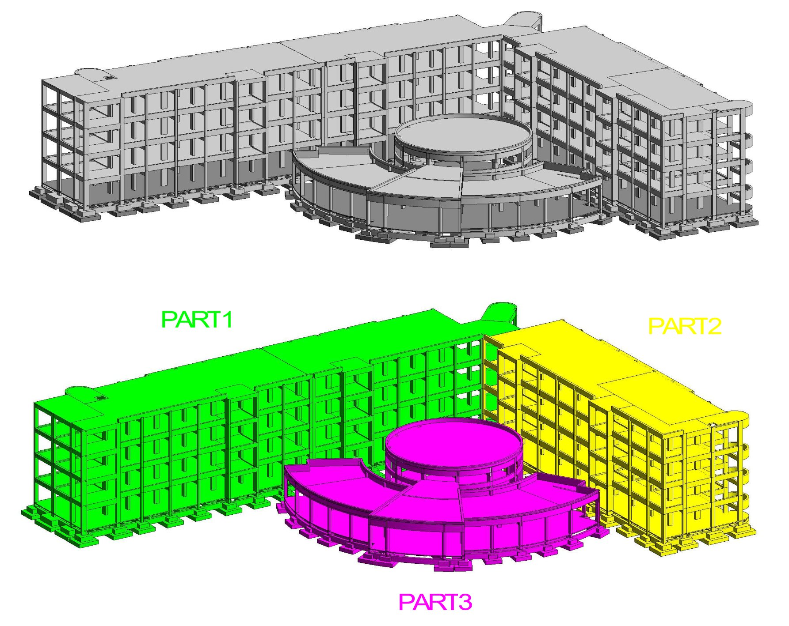
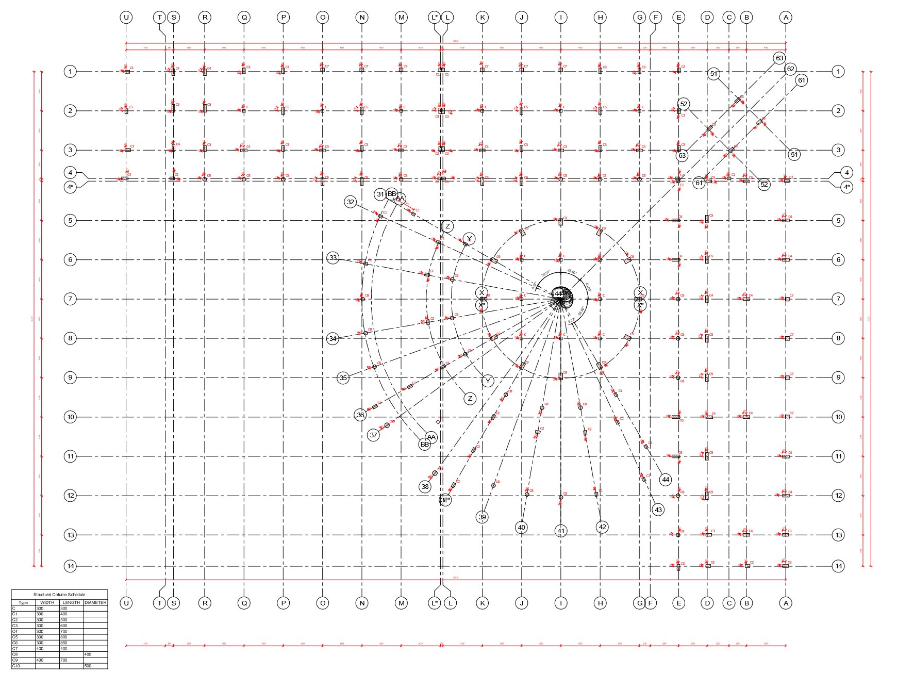
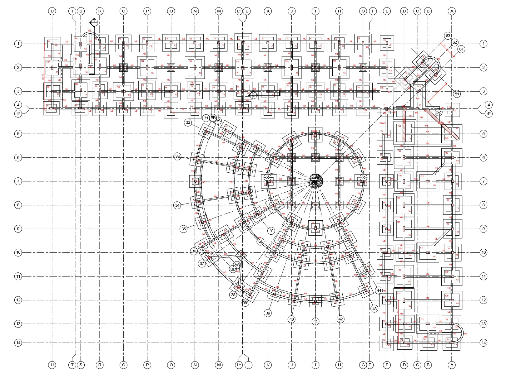
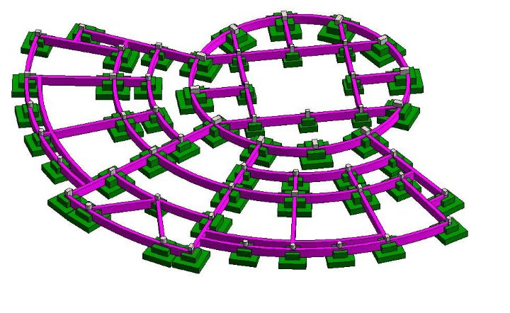
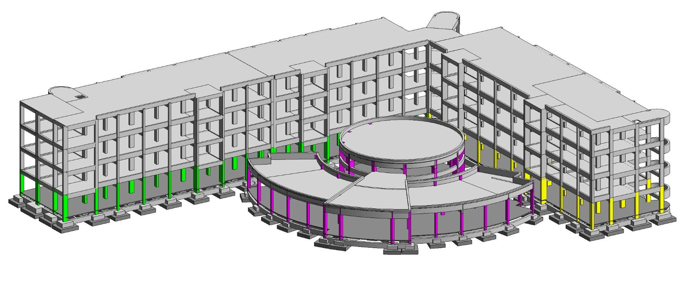
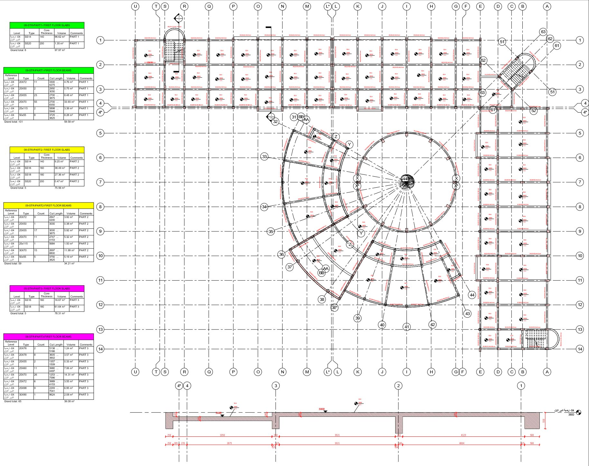
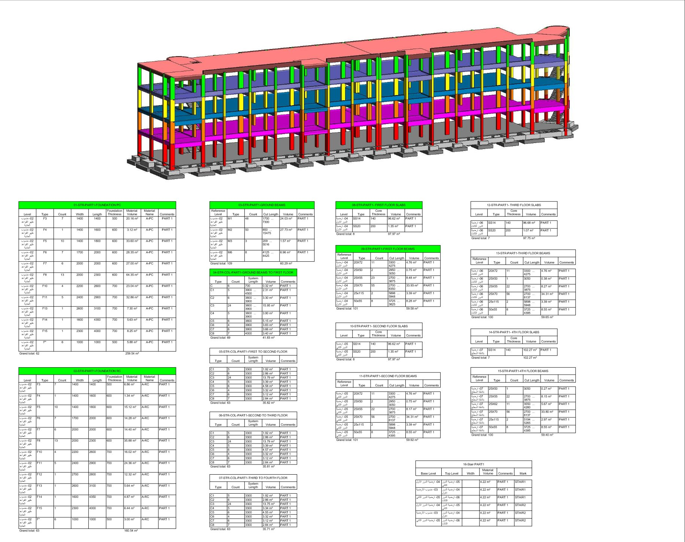
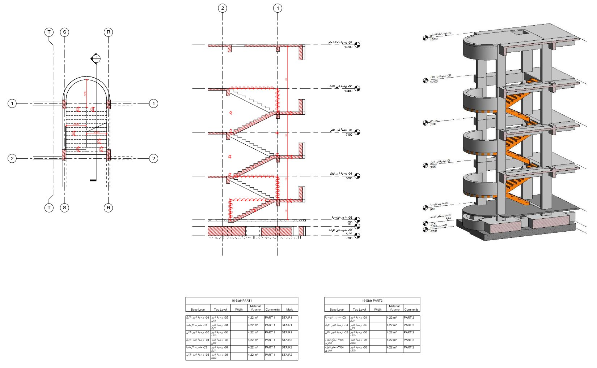

The brief
Model a reinforced-concrete building with two rectangular wings and a curved block around a circular core, then document it the way a consultancy issues structural drawings. This was the final project of a BIM Revit Structure course.
What I did
Starting from CAD grid, foundation and floor plans, I set up rectangular and radial grids and modelled the full structure: isolated footings, combined footings and raft foundations on plain-concrete blinding, ground and strap beams, rectangular and circular columns, beams, slabs and stairs. I split the model into three parts so each could be scheduled and issued on its own, and made custom tag families for columns, beams, slabs and footings.
Output
A full drawing set: column layout, foundation plans and sections for each part, ground-floor columns, first-floor framing, stair details, and material take-off schedules giving the count, size and concrete volume of every element.







